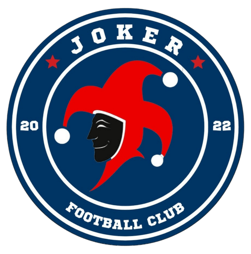
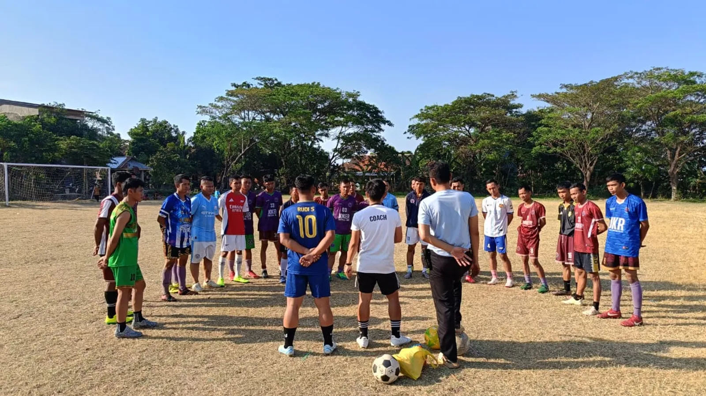

Tim Kebanggaan PLTU Cirebon
Kepada Yang Terhormat
Manajemen & Divisi ComRel
PLTU Cirebon
Created & Designed by Setyawan90
Proposal Interaktif
Inisiatif organik yang membuktikan bahwa olahraga mampu menyatukan, membangun karakter, dan menciptakan dampak sosial nyata di PLTU Cirebon.

Latar Belakang
Berdiri sejak 1 Januari 2022, Tim JOKER FC lahir dari inisiatif para pekerja operasional — petugas kebersihan, office boy, dan tim lapangan — di PLTU Cirebon. Berawal dari permainan santai selepas jam kerja, semangat kebersamaan ini tumbuh menjadi klub sepak bola yang disiplin dan kompetitif dengan 85 anggota aktif.
Nama "JOKER" melambangkan elemen kejutan: dari latar sederhana, lahir kekuatan kolektif yang patut diperhitungkan di Cirebon. Dalam 20+ turnamen, tim ini telah meraih 6 gelar juara.
Kini, Tim JOKER adalah bukti nyata bahwa kesejahteraan pekerja dan dampak sosial dapat tumbuh dari lapangan rumput.
Komposisi Tim
Dibangun oleh talenta lokal dan dedikasi pekerja — satu kesatuan yang solid.
Pemuda Lokal
Talenta asli Cirebon
Pekerja PLTU
Berbasis operasional
Personil Aktif
Solidaritas lintas divisi
Dibentuk sepenuhnya dari talenta dan tenaga kerja lokal Cirebon — ≈70% pemuda setempat, 100% berbasis pekerja PLTU, dengan 85 personil aktif yang solid dan terus bertumbuh.
Nilai Strategis
Aset strategis bagi Social License to Operate dan pengembangan komunitas berkelanjutan.
Membangun kepercayaan publik dan memperkuat hubungan perusahaan dengan komunitas sekitar melalui wadah olahraga yang inklusif.
70% anggota adalah pemuda lokal — kontribusi nyata terhadap pengembangan masyarakat dan pengurangan pengangguran terselubung.
Olahraga rutin meningkatkan kesehatan fisik dan mental pekerja, berdampak langsung pada produktivitas dan semangat kerja.
Jejak Langkah
Berawal dari inisiatif pekerja operasional PLTU Cirebon yang bermain sepak bola selepas jam kerja. Dari hobi bersama, terbentuk solidaritas lintas divisi dengan 85 anggota aktif.
Prestasi pertama sebagai runner-up dalam turnamen Kuwu Cup di Kanci Wetan — bukti awal kualitas tim.
Pemain JOKER berkontribusi dalam tim Cirebon Power dan meraih juara pertama turnamen futsal antar instansi pemerintah — pemain terbaik diraih oleh pemain JOKER.
Jejak Langkah
Pemain JOKER kembali berkontribusi dalam tim Cirebon Power mempertahankan gelar juara tahun kedua berturut-turut — pemain terbaik kembali diraih oleh pemain JOKER.
Meraih posisi ketiga di dua turnamen open: Mandala Giri Cup dan Nadran Cup Ender — konsistensi prestasi.
Runner-up di turnamen open Kuwu Cup 3 Danawinangun — penutup tahun 2025 dengan prestasi gemilang.
Dari 6 gelar juara dalam 20+ turnamen sejak 2022 — perjalanan Tim JOKER adalah bukti nyata bahwa dedikasi pekerja dan talenta lokal mampu bersaing dan berprestasi.
Di Balik Tim
Para pengurus dan pembina yang memastikan Tim JOKER tetap solid, sehat, dan kompetitif.
Jumadi
GA Superintendent (CPS)
Pembina
Juli S
OCS SPV
Manajer
Komar
OCS Team Lead
Kesehatan
Rudy S
OCS Team Lead
Admin
Kebersamaan • Kegembiraan • Optimisme • Ambisi • Prestasi
"Dari lapangan rumput PLTU Cirebon, kami tidak hanya bermain sepak bola — kami membangun solidaritas, menumbuhkan talenta lokal, dan membuktikan bahwa dedikasi pekerja mampu berprestasi."
Dengan 6 gelar juara dalam 20+ turnamen sejak 2022, kami hadir bukan untuk meminta — tetapi untuk bermitra.
Dukungan Cirebon Power adalah investasi pada masa depan komunitas,
dan kami siap menjadi wajah kebanggaan perusahaan di lapangan hijau.
Proposal Interaktif © 2025 — Tim JOKER FC
Created & Designed by Setyawan90